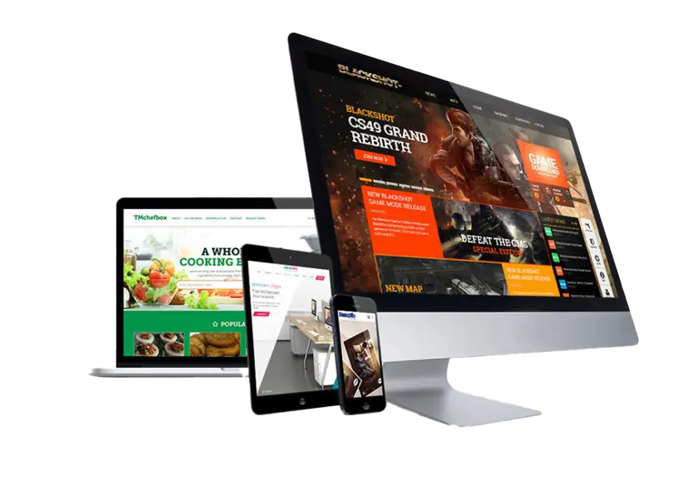

Quienes somos
Nuestra trayectoria se construye sobre la base de un compromiso constante con la calidad y la creatividad. Trabajamos incansablemente para dar vida a visiones digitales únicas que trascienden las expectativas. Las experiencias positivas de nuestros clientes respaldan nuestro enfoque centrado en la satisfacción y el logro de resultados excepcionales.
 QUIERO MI PAGINA